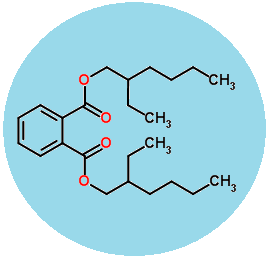
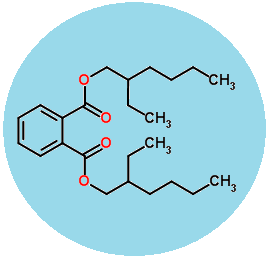
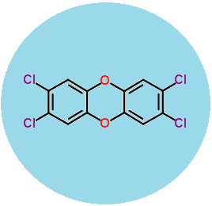
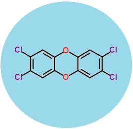

The endocrine disrupting chemicals
Hover on chemical for explanation, click on button for the chemical's risk assessent


 


 

OBELIX study 2009-2013
OBELIX (OBesogenic Endocrine disrupting chemicals (EDCs): LInking prenatal eXposure to the development of obesity later in life) is a multidisciplinary European research project that was performed from May 2009 to November 2013. The main goal of OBELIX was to investigate if early life exposure to EDCs (endocrine disrupting chemicals) plays a role in the development of obesity and related disorders later in life. OBELIX investigated six major classes of EDCs, including dioxins, polychlorinated biphenyls, brominated flame retardants, organochlorine pesticides, phthalates, and perfluorinated alkyl acids (PFAAs). (Text obtained from OBELIX report summary).
Project Context and Objectives:
The incidence of childhood obesity has reached epidemic proportions globally. Despite advancements in knowledge on the endocrine and neuronal regulation of energy balance, there is still much uncertainty related to the etiology and underlying physiological mechanisms of obesity. There is accumulating evidence that factors that influence long-term risk of obesity and related disorders begin very early in life. Early life exposure to environmental contaminants has been implicated in altering developmental metabolic programming, resulting in possible higher susceptibility to obesity. The OBELIX (OBesogenic Endocrine disrupting chemicals: LInking prenatal eXposure to the development of obesity later in life) project examines the hypothesis that prenatal exposure to endocrine disrupting compounds (EDCs) in food plays a role in the development of obesity later in life. (Text obtained from OBELIX report summary).
Risk assessement, effects of mouse study, some effects of human study, and explanations of the human study group, called the cohorts
Risk Assessment
One of the main goals of OBELIX is to ascertain if there are risks for obesity or related metabolic disorders in children at current background levels of EDCs. To this end, the researchers performed risk assessment using the 5 EDCs that were tested in animal studies in WP5. Two of the OBELIX EDCs, namely DDE and BDE-47, were not included in this risk assessment exercise, as the researchers did not perform animal studies on these compounds in OBELIX. It should be mentioned for DDE, however, that a consistent set of observations was found in WP1 indicating that prenatal DDE is associated with accelerated growth in early childhood, and increased BMI and serum leptin levels at age 6 years (see explanation at "Effects"). This would suggest that current background levels of DDE are not without risk and further examination of health risks of DDE exposure in children is warranted. For the risk assessment, we selected the most sensitive critical effect observed in OBELIX animal studies and compared this to benchmark dose levels (BMDL) established by EFSA. We then calculated a corresponding tolerable daily intake (TDI) level and compared this to exposure and/or body burden (BB) levels reported by EFSA, taking important exposure routes into account. Where possible we also used calculated food exposure data from WP3, in which food frequency questionnaires (FFQ) from FLEHS, Michalovce and LINC were used to calculate exposure to EDCs through the diet. (Text obtained from OBELIX report summary).
Effects of chemicals
Mouse model effects
A total of 5 long term animal studies were carried out in OBELIX. The selected test EDCs were BPA, PFOA, TCDD, DEHP and PCB 153. Maternal exposure to the chemicals at low concentrations (generally below NOAEL for developmental toxicity) was given through the diet during pre-mating, gestation and lactation (total of 9 weeks). C57BL/6 (B6) dams were mated with FVB males, and after weaning, exposure was stopped, and the F1 progeny were maintained for a period of 20 to 55 weeks of age. (Text obtained from OBELIX report summary).
Human model effects
Growth during early childhood and BMI at 6 years showed an relation with early life exposure to EDCs. Pooling cohorts gave a large sample size, allowing distinction between investigation of effects due to (modelled) prenatal and postnatal exposure to PCBs, DDE and HCB. Distinct effects were observed for the different chemicals depending on pre- or postnatal exposure. Our studies indicated that an increase in growth and BMI at 6 years was associated with prenatal DDE exposure. In contrast, a significant decrease in growth was associated with postnatal PCB-153 exposure (Iszatt et al, 2014, submitted). Preliminary studies also indicate a relation with perinatal exposure to dioxin-like compounds and BMI at 6 years (Iszatt et al, in preparation). (Text obtained from OBELIX report summary).